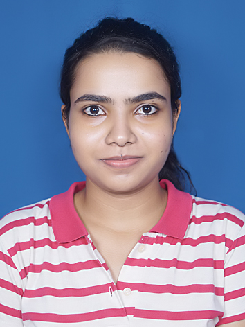
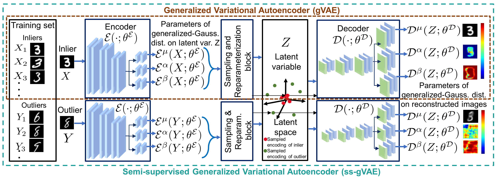

Renuka Sharma

I am a joint-PhD student in the Vision, Graphics and Imaging Lab
(ViGIL)
in the
Department of Computer Science
, IIT Bombay and
Data Science and AI department
at Monash University. I work with
Prof Suyash Awate
and
Prof Biplab Banerjee
from IITB. From Monash, my supervisors are
Prof Jianfei Cai
and
Prof Nick Birbilis
. My PhD project is also associated with the
Woodside Innovation Centre
at Monash.
Research

A Semi-supervised Generalized VAE Framework for Abnormality Detection using One-Class Classification
Renuka Sharma
, Satvik Mashkaria, and Suyash P. Awate
WACV 2022, Hawaii, USA
Contact
Email:
renuka.10078@gmail.com; renukasharma@cse.iitb.ac.in
Address:
CC-405, New CSE Building, IIT Bombay, Mumbai